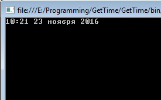

|
Формат |
Результат |
|
DateTime.Now.ToString(«D») |
22 ноября 2016 г. |
|
DateTime.Now.ToString(«d») |
22.11.2016 |
|
DateTime.Now.ToString(«F») |
22 ноября 2016 г. 17:19:59 |
|
DateTime.Now.ToString(«f») |
22 ноября 2016 г. 17:19 |
|
DateTime.Now.ToString(«G») |
22.11.2016 17:19:59 |
|
DateTime.Now.ToString(«g») |
22.11.2016 17:19 |
|
DateTime.Now.ToString(«M») |
ноября 22 |
|
DateTime.Now.ToString(«O») |
2016-11-22T17:19:59.2628195+03:00 |
|
DateTime.Now.ToString(«R») |
Tue 22 Nov 2016 17:19:59 GMT |
|
DateTime.Now.ToString(«s») |
2016-11-22T17:19:59 |
|
DateTime.Now.ToString(«T») |
17:19:59 |
|
DateTime.Now.ToString(«t») |
17:19 |
|
DateTime.Now.ToString(«U») |
22 ноября 2016 г. 14:19:59 |
|
DateTime.Now.ToString(«u») |
2016-11-22 17:19:59Z |
|
DateTime.Now.ToString(«Y») |
Ноябрь 2016 |
|
Формат |
Описание |
|
d |
День месяца. От 1 до 31 (без ведущего нуля) |
|
dd |
День месяца. От 01 до 31 (с ведущим нулем). |
|
ddd |
Краткое название дня недели |
|
dddd |
Полное название дня недели |
|
M |
Месяц. От 1 до 12 (без ведущего нуля) |
|
MM |
Месяц. От 01 до 12 (с ведущим нулем) |
|
MMM |
Краткое название месяца |
|
MMMM |
Полное название месяца |
|
y |
Одна или две последние цифры года (практически неактуально) |
|
yy |
Две последние цифры года |
|
yyy |
Три последние цифры года |
|
yyyy |
Четыре последние цифры года |
|
yyyyy |
Пять последних цифр года (будет не скоро) |
|
h |
Час. От 0 до 12. (без ведущего нуля) |
|
hh |
Час. От 00 до 12 (с ведущим нулем) |
|
H |
Час. От 0 до 23 (без ведущего нуля) |
|
HH |
Час. От 00 до 23 (с ведущим нулем) |
|
m |
Минута. От 0 до 59 (без ведущего нуля) |
|
mm |
Минута. От 00 до 59 (с ведущим нулем) |
|
s |
Секунда. От 0 до 59 (без ведущего нуля) |
|
ss |
Секунда. От 00 до 59 (с ведущим нулем) |
|
от f до fffffff |
Миллисекунды. Выводимое количество цифр соответствует количеству «f» |
|
K |
Часовой пояс |
|
t |
Половина дня. A или P |
|
tt |
Половина дня. AM или PM |
|
z |
Смещение в часах относительно GMT (без ведущего нуля) |
|
zz |
Смещение в часах относительно GMT (с ведущим нулем) |
|
g |
Период или эра |
С ведущим нулем (например для часов и минут), означает что если значение будет меньше 10 (т.е. одноразрядным), то перед имеющимся разрядом будет добавлен ноль. Например, так: «05:01» (пять часов, одна минута). Без ведущих нулей мы бы получили следующее: «5:1» (те же пять часов и одна минута, но выглядит уже иначе).
Пример:
Console.WriteLine(DateTime.Now.ToString("HH:mm dd MMMM yyyy"));
